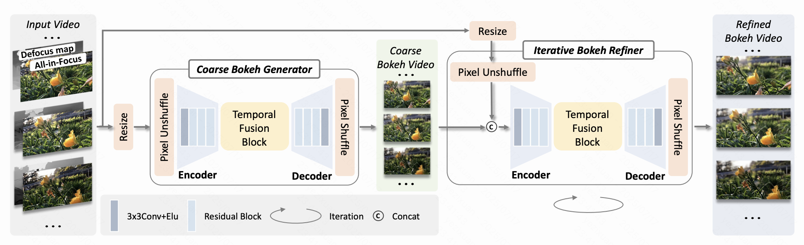

Zixuan Ye
PhD Student in Artificial Intelligence, HKUST
About Me
Hiüëã! I'm Zixuan Ye (Âè∂Á¥´Áíá), a first-year Ph.D. student at the Hong Kong University of Science and Technology, affilated with the C4 Group supervised by Wenhan Luo. I obtained both my Bachelor's and Master's degrees from Huazhong University of Science and Technology, supervised by Hao Lu and Zhiguo Cao. My research interests lie in GenAI, especially in video generation and editing.
I'm always open to new collaborations, so please feel free to get in touchüôã!
News
- Jun. 2025
-
Feb. 2025
StyleMaster accepted to CVPR 2025.
Education
-

Ph.D. in Artificial Intelligence
Hong Kong University of Science and Technology (HKUST)
Supervisor: Wenhan Luo
Sep 2025 - Present -

Master in Intelligent Science and Technology
Huazhong University of Science and Technology (HUST)
Supervisors: Hao Lu and Zhiguo Cao
Sep 2022 - Jun 2025 -
B.Eng in Automation
Huazhong University of Science and Technology (HUST)
Sep 2018 - Jul 2022
Experience
-
Research Intern
Topic: Controllable video generation: video editing.
Advisors: Dr. Quande Liu and Dr. Xintao Wang.
Feb 2025 - present -
Research Intern
Topic: Controllable video generation: video stylization.
Advisors: Dr. Huijuan Huang and Dr. Xintao Wang.
Jul 2024 - Feb 2025
Publications
Selected Preprint
-

-
FullDiT2: Efficient In-Context Conditioning for Video Diffusion TransformersarXiv:2506.04213
Conference Papers
-
StyleMaster: Stylize Your Video with Artistic Generation and TranslationIEEE Conference on Computer Vision and Pattern Recognition (CVPR), 2025

-
Unifying Automatic and Interactive Matting with Pretrained ViTsIEEE Conference on Computer Vision and Pattern Recognition (CVPR), 2024
-
Infusing Definiteness into Randomness: Rethinking Composition Styles for Deep Image MattingAAAI Conference on Artificial Intelligence (AAAI), 2023
-
SCAPE: A Simple and Strong Category-Agnostic Pose EstimatorEuropean Conference on Computer Vision (ECCV), 2024
-
In-Context MattingIEEE Conference on Computer Vision and Pattern Recognition (CVPR), 2024 (Highlight)
-
Training Matting Models without Alpha LabelsAAAI Conference on Artificial Intelligence (AAAI), 2025
-
SAPA: Similarity-Aware Point Affiliation for Feature UpsamplingNeural Information Processing Systems (NeurIPS), 2022 (Spotlight)
-
Video Bokeh Rendering: Make Casual Videography CinematicACM International Conference on Multimedia (ACM MM), 2024 (Oral, Best Paper Candidate)
Honors
- Hong Kong PhD Fellowship Scheme (HKPFS), Hong Kong SAR (2025)
- HKUST RedBird PhD Award (2025)
- China National Scholarship (2024)
- Shenzhen Stock Exchange Scholarships for Postgraduates (2023)